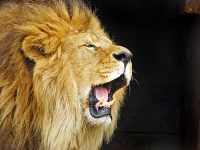

Roles that lions have
- As apex predators lions help controll the ecosytem by hunting animlas which helps maintain a balenced ecosytem
- Also lions influence the entire food chain. There hunting strategies can affect the behaviorand distribution of preys
- Lions have a significant culture spirtual and symbolic just like humans which represents them as strong and courage and leadership
What makes lions so powerful?
Lions are considered powerful due to their combination of physical attributes including strong, compact bodies, powerful forelegs, sharp teeth and jaws, which allow them to take down large prey.
